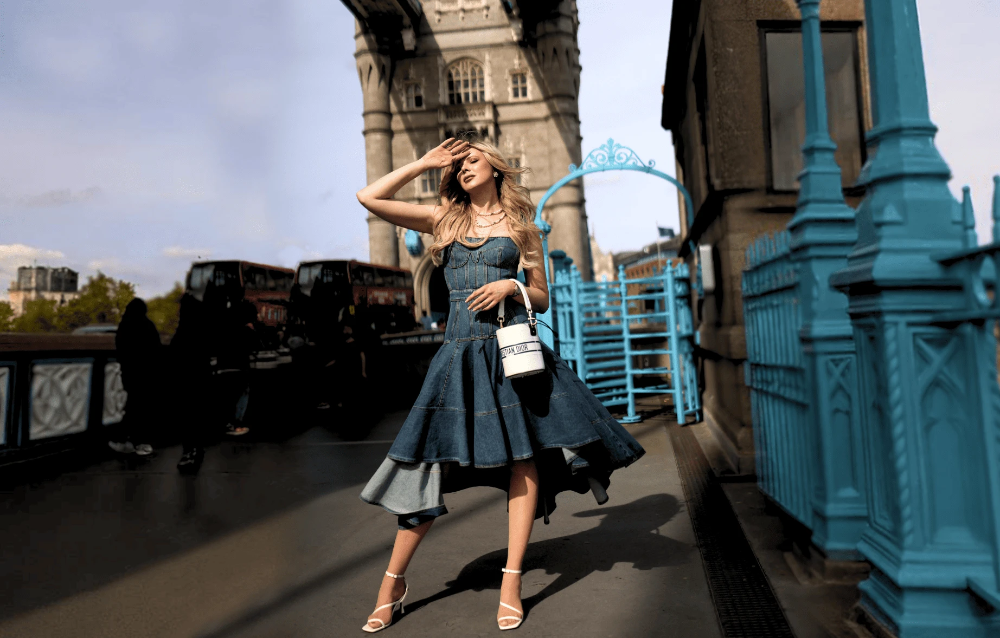
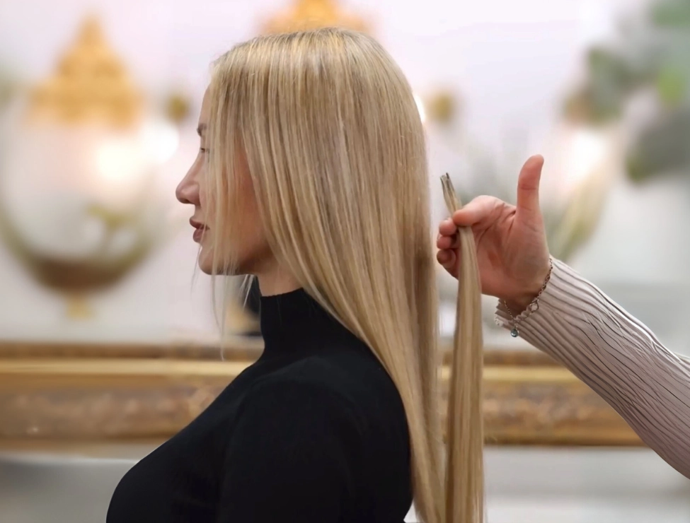
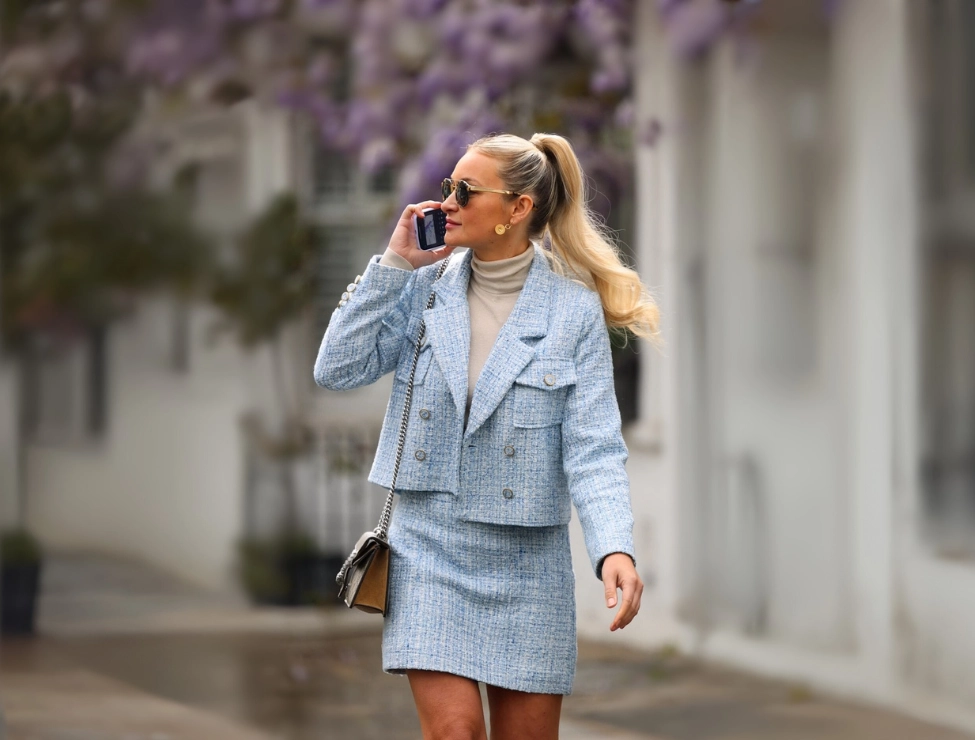
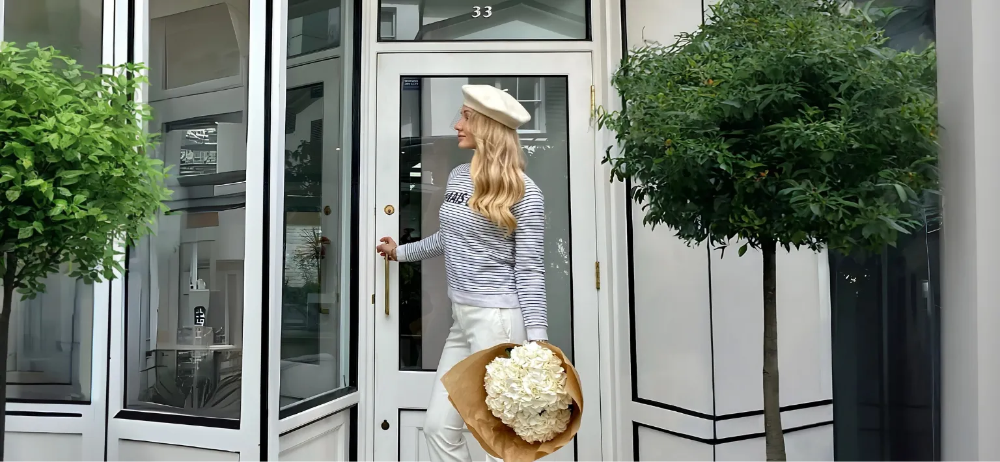
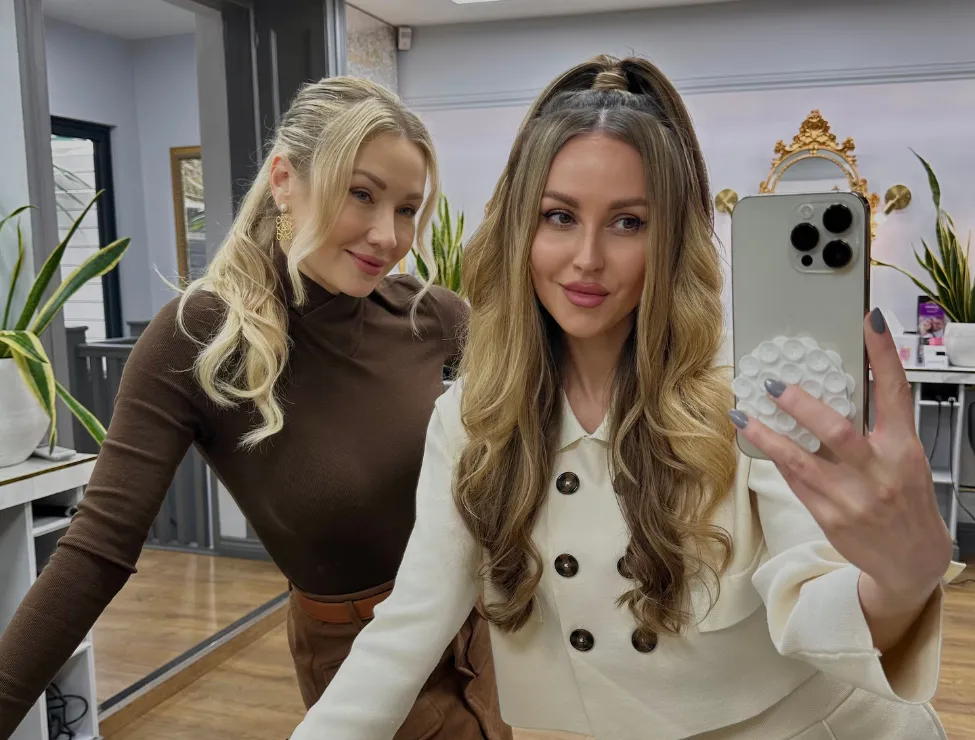
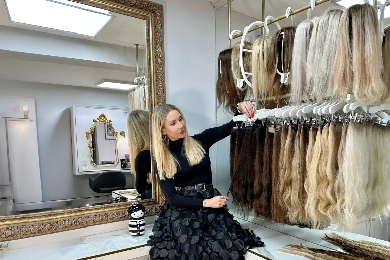
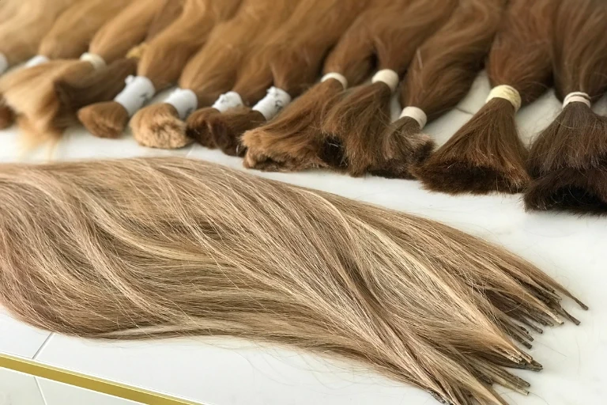
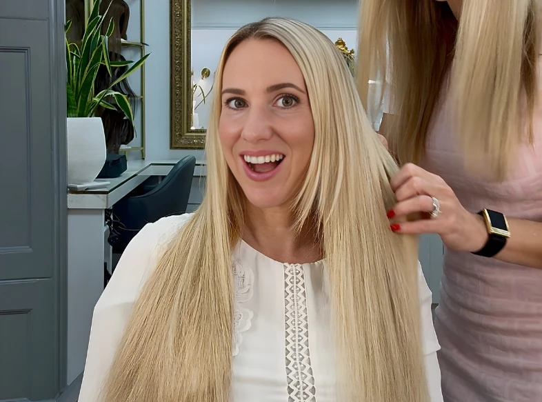

London's Leading Russian Hair Extensions Salon
- 20 yearsOf Russian hair mastery
- Two salonsLondon and Manchester
- Six natural texturesIncluding naturally curly hair
- 100% Russian hairColour matched without dye
As featured in
Our extension services
For Everyday Confidence and Extraordinary Moments

Micro Ring Hair Extensions
Undetectable, everyday confidence
Micro rings are the smallest, most undetectable non-glue extension attachment technique available. We combine strands of natural hair with extensions using tiny copper rings. Since no glue, adhesive or keratin is used, there is no excessive force applied during removal, therefore limiting any damage.
Micro Ring Hair Extension Key Features:
- Safest attachment method
- Finest Russian hair
- Fully reusable hair
- Strand-by-strand colour match

Micro Bond Hair Extensions
Discreet coverage for finer hair
Micro bonds are one of the smallest and most discreet permanent hair extension techniques. We custom-blend and tip each keratin bond by hand in the salon to match your hair perfectly. The bonds are tailored to your hair's density and colour, blending seamlessly and moving naturally for a soft, undetectable finish.
Micro Bond Hair Extension Key Features:
- Small and discreet bonds
- Finest Russian hair
- Tipped by hand in the salon
- Fully reusable hair

Tape Hair Extensions
Instant length in half an hour
Unlike other ranges of tapes, mass-produced in China and then relabelled before they are sold, our tapes are made by hand using genuine Russian hair and where the colour is achieved, not with dye, but by blending multiple shades of hair into each tape. Perfect for adding instant length and volume.
Tape Extension Key Features:
- Length and volume in as little as 30 minutes
- Ideal for fine hair
- Gentle, reusable adhesive
- Ultra-thin, invisible, and comfortable to wear

Clip-in Hair Extensions
Transformation with no commitment
The making of our clip-ins is a time-honoured craft that cannot be replicated by a machine. This is why all aspects of our crafting process are done by hand. Each clip-in is made using the highest quality Russian hair and a full-head look is achieved by combining multiple wefts into a single piece.
Clip-in Hair Extension Key Features:
- Instant length and volume
- Finest Russian hair
- Quick and easy to install at home
- Available made-to-measure or ready-to-buy

Weft Hair Extensions
Fuller hair with natural movement
Hair wefts are fast becoming a popular way of achieving longer fuller hair. Best attached using micro rings, wefts are a versatile way of achieving a more permanent application than clip ins yet taking less time to install than strand by strand. They deliver seamless blending, natural movement, and require minimal maintenance.
Weft Hair Extension Key Features:
- Attached with micro rings or braids
- Suitable for various hair types
- Comfortable and secure
- Adds length and volume quickly

Braids and Ponytails
A new look in seconds
Clip-in ponytails, braids, and fringes are an easy way to refresh your style or create a completely new look in seconds. A classic ponytail can be positioned in different ways for versatile effects, while braids and fringes add instant interest. Crafted from Russian hair, each piece blends seamlessly with your own effortlessly.
Braid and Ponytail Key Features:
- Comfortable to wear all day
- One piece, many looks
- Instant length and volume
- Long lasting

About Us
Step Into the World of Tatiana Karelina
Through hair we empower women. And when women empower women, great things happen.
We are a leading chain of hair extension salons, and our brand positioning is centred on creating beautiful heads of hair through an obsession with the finest Russian hair. We treat each client relationship as unique, and as a source of continued inspiration to help empower today's women with confidence-building hair.
Our aim today, as it was 20 years ago, is to provide the best hair extensions in the world. We want to create WOW moments for every client. We are the company behind Ariana Grande's signature ponytail, the unicorn braid, and some of the most talked-about hairstyles at Coachella.
We're here to elevate the standard of hair extensions. For our clients. For our employees. For our community.



Our point of difference
Exclusive Access to the World's Most Coveted Hair
Why Russian hair? Russian hair not only provides an excellent match in thickness and texture for Western women, but it is also considered the best in the world because of the Russian diet. Rich in nutrients and vitamins yet low in sugar, salt, and processed fats, this diet produces hair that is naturally soft, healthy, and voluminous.
Over the past 20 years, we have built an extensive network of trusted hair collectors who travel throughout Eastern Europe collecting hair, exclusively for us. By working directly with these collectors, we secure the finest Russian hair at its source, before it gets sold to brokers and mixed with Asian hair.
By sourcing the finest Russian hair and keeping a large in-salon inventory, we are able not only to offer same-day consultations and fittings, but also to achieve the perfect colour match with our proprietary blending technique. With so many different hair colours and textures the perfect colour match is achieved not with dye, but by drawing hair from several ponytails and combining them into individual strands.
Hair loss
Rediscover Your Confidence. Let Us Prove That Hair Loss Can Be Managed
“After losing my hair during chemotherapy, I turned to the salon for a wig that would look just like my natural, pre chemo hair. The wig they created for me is incredible. They sourced hair that perfectly matches my natural colour, length and texture.”
Kathryn Forde, Google review
Client reviews
Real Stories of Confidence and Transformation
Absolutely the best hair extensions I've ever had! Having tried countless brands and salons over the years, I can confidently say that Tatiana's hair extensions are in a league of their own. The quality is amazing: the hair feels natural, looks beautiful, and most impressively, it stays exactly the same even months after being fitted. No tangling, no dullness, just soft, glossy hair that blends perfectly.
Daisy Slavkova
I'd been struggling with hair loss over the years. My very fine, thin and whitish hair together with a double crown only exacerbated the issue. I'd either have to painstakingly and strategically camouflage patches or plonk on a hat! Enough is enough! I took the bull by the horns and started to research. This led me to Tatiana. I'm now the very proud owner of a topper! It's truly amazing. No more hiding my head or feeling embarrassed.
Veronica Heague
Had extensions for the first time for my wedding. Couldn't recommend Tatiana Karelina enough. My hair is naturally wavy and curly, which they matched so that I don't have to straighten it the whole time. Have had so many comments about my hair and how lovely it looks and how natural it is. Lots of people saying they never knew my hair was so long. Thank you to the team, really appreciate all their expertise and help to make me feel at ease.
Ruth Morgan
I am so happy with my experience with Tatiana. I have had extensions for years, and always struggled because the texture never matched my natural hair. I have a wavy hair texture, and with Tatiana, the staff carefully matched the wave with numerous different options. Also, the colour match is absolutely perfect. They have hair in house, so it can all be done in one go. It has meant that I no longer have to use heat on my hair, and has truly changed my life.
Antonia Moss
I first booked in for a consultation for micro ring hair extensions with Olga. This was to make sure my hair was suitable. Olga explained everything to me and went through the options I had which would work best for my hair. On the day of them being fitted, the girls were lovely and made me feel very comfortable. The lady who matched the colour and texture of my hair was amazing.
Lisa Robinson
The quality is excellent. The whole experience in the salon is luxurious from beginning to end, and I love how my hair looks. All the staff are lovely, too. I highly recommend Tatiana Karelina.
Jennifer Solomon
I had such a lovely consultation for a hair topper. She made me feel really comfortable and took the time to go through all the options in detail, explaining everything clearly so I understood what would work best for me. Her attention to detail was amazing, especially with the colour matching. I left feeling reassured, supported, and excited about the next step. I can't recommend her highly enough!
Dayanara Brazier
I've been coming here for over two years now and I can honestly say it's the best decision I've ever made for my hair! The quality of the extensions is amazing, they always blend beautifully and feel so natural. The team is incredibly professional, friendly, and genuinely care about getting everything just right. I always leave feeling confident and happy with the results.
Funda Yahioglu
I have had a wonderful experience at Tatiana Karelina. The staff are so friendly, professional and knowledgable, making me feel very welcome. I had tape extensions put in for my wedding and the outcome was incredible. Thick, luscious hair. I couldn't recommend the salon more highly!
Claudia Roden
Very professional, top quality service and best natural hair available on the market. I would like to say a special thank you to an outstanding specialist Olga. Most gentle hands and lasting quality with no damage to your hair. Highly recommended salon. Thank you.
Gem Atelier
The time, care and attention that Tatiana and her staff put in is impeccable! I felt like I was in safe hands, and I was! I shall remain a loyal customer and recommend to all my friends. Thank you Tatiana and Juli!
S
I've always struggled with my hair, it's very thin and I just never had much of it. I used to feel really self conscious about it, until I found Tatiana. At first, I tried a braided ponytail extension, and even that small change made a huge difference in my confidence. It looked amazing! But this year, I decided to go all in and get full hair extensions and honestly, I can't recommend them enough. The quality is absolutely incredible.
Gosia Klimek
I've been a client of Tatiana Karelina for years, and I've always been impressed by the incredible quality of the hair they offer. More recently, after losing my hair during chemotherapy, I turned to the salon for a wig that would look just like my natural, pre chemo hair. The wig they created for me is incredible. They sourced hair that perfectly matches my natural colour, length, and texture.
Kathryn Forde
What a great place and great experience from start to finish! The ladies were so warm and knowledgeable, gave me detailed advice, answered all questions and made me feel really special, and helped to enhance the look with a beautiful natural ponytail, made to perfection. Thank you from the bottom of my heart Tatiana and the team, so glad I have found you!
Ekaterina Rowell
Visiting Tatiana was an amazing experience. I firstly attended a consultation appointment and 8 weeks later, my new hair was ready for collection. The colour match was perfect, all the staff and Tatiana were totally professional, knowledgeable of their products and engaging at both appointments. Nothing was too much trouble. I would highly recommend them to you if you're looking for your dream hair.
Debra Appleby
From start to finish, my experience at this salon was nothing short of outstanding. I had Russian hair extensions fitted, and I can confidently say they are the best of the best. Luxurious, natural, and flawlessly blended. What truly sets this salon apart is the sheer level of expertise and care that goes into every step of the process. Tatiana, the owner, is an absolute gem. Warm, welcoming, and incredibly knowledgeable.
J
After months of frustration with a big and well known online extensions brand, that sadly I wasted my money on just to end up with frizzy tangled hair, I was about to give up hope. That's when I found Tatiana Karelina's salon, and it was such a game changer! The salon has a warm and welcoming atmosphere, so luxurious and girly, and the staff are not only professional but also genuinely caring.
Ronja Kunzmann
I had an amazing experience at Tatiana Karelina. From the first consultation, Tatiana welcomed my mother and me, walking us through every single step of the process, including installation, maintenance, prices and more. On the day of the installation, the entire team made my mum feel at home, showing a personal interest that you don't often find in many places. Maria did a beautiful job with the micro rings.
Yeliz
Amazing hair extensions! Thank you so much! The colour matching was perfect, it is so quick, but most of all you cannot feel them at all when you touch your hair. An absolute game changer, and the salon is so beautiful, super friendly and extremely professional. Would highly recommend!
Angelin Ober
I have visited Tatiana Karelina's salon in September for a piece of clip in extension and have to say the quality of the hair used is absolutely amazing. I got a clip in braid in the end and it was super well made with a sturdy clip as well as long, soft hair that's hand blended and perfectly matches my colour. The braid also has a unique design at the top to make braiding easy.
Angela Lei
I am a customer of Tatiana Karelina Hair Extensions and can not recommend this place enough. Amazingly friendly and caring atmosphere, cozy interior and outstanding hair extensions. Tatiana herself is there to answer questions and help customers to address their needs. The quality of extensions is TOP. It is, by no doubt, the best hair extensions salon in London.
Catalina Huzum

@tatianakarelinaofficial
Step behind the scenes with us. Every day we share the transformations as they happen, the Russian ponytails arriving in the salon, the colour blending that makes a match invisible, and the moment a client sees her new hair for the first time.
Join the women who found their confidence with us, and see what your own hair could look like.
Everything you want to know
Frequently Asked Questions
Why is Tatiana Karelina the best for hair extensions in the UK?
Tatiana Karelina specialises exclusively in hair extensions and has built an unmatched reputation over 20 years for creating the most natural, seamless results in the UK. Every method is offered in one place: micro rings, micro bonds, tapes, wefts, clip-ins, toppers and medical wigs so recommendations are tailored to your hair rather than what works best for the salon. We use only Russian hair in six natural textures and maintain a large in-salon stock for same day fittings. With transparent pricing, gentle placement that protects natural hair and reusable hair at refit, Tatiana Karelina remains the most trusted choice for Russian hair extensions in the UK.
Why choose Tatiana Karelina for hair extensions in London?
We are one of the very few salons in London specialising exclusively in Russian hair extensions. With 20 years of experience, we have developed a proprietary colour blending process and stock one of the largest inventories of Russian hair extensions in the UK. This allows us to offer same-day consultations and fittings with perfect matches for colour, texture, and length.
What types of hair extension services do you offer?
We specialise in micro ring hair extensions, micro bond hair extensions, tape hair extensions, clip-in hair extensions, weft hair extensions, hair toppers, medical wigs, and clip-in ponytails and braids. All services are available in both our London and Manchester salons, with consultations in-person or by video call.
How do I know what type of hair extensions is best for me?
The right hair extension method depends on your hair type, lifestyle, and goals. Micro ring hair extensions are ideal if you want a reusable, glue-free method that lasts for months. Micro bond hair extensions work well for finer areas around the crown and nape, giving discreet, long-lasting results. Tape hair extensions are ultra-flat, lightweight, and comfortable, perfect for fine hair and those wanting quick application. Beaded wefts add length and volume with a semi-permanent finish. For flexibility, clip-in hair extensions, braids, and ponytails offer instant transformations. If you have thinning or medical hair loss, custom hair toppers and medical wigs provide natural-looking coverage. If you are unsure which option is right for you, during your consultation we will go over all the different methods in detail and recommend the best solution for your hair.
Are hair extensions suitable for all hair types?
Yes. Because we stock Russian hair in all textures, fine, straight, wavy, coarse, frizzy, and curly, we can match virtually every hair type. During your consultation we assess your hair's density, movement, and texture to ensure a seamless result.
How long do hair extensions last?
The lifespan of your hair extensions depends on the method. Micro ring hair extensions and micro bond hair extensions can last up to 3 months between maintenance appointments, while tape hair extensions are usually refitted every 6 to 8 weeks. Clip-in hair extensions, toppers, and ponytail extensions can last for years with proper care because they are not worn daily. At Tatiana Karelina, we use only premium Russian hair, which can be reused time and again, often lasting up to 2 years.
How do I care for my hair extensions?
Caring for hair extensions is simple. Whether you choose micro rings, bonds, tapes or clip-ins, the golden rules are the same: avoid oily roots, do not over-direct the strands, and never pull. Use sulphate-free shampoo, keep conditioners away from the roots, and brush gently with an extension-safe brush. With good aftercare, your Tatiana Karelina hair extensions will stay beautiful for longer.
Will people notice my hair extensions?
No. Our hair extensions are designed to be invisible and undetectable. Micro ring and bond hair extensions are colour-matched and placed with precision. Tape hair extensions use ultra-thin, hand-injected seams that mimic the scalp. Clip-in hair extensions and ponytails sit flat and blend seamlessly. Our colour blending process ensures even close friends will find it hard to tell you are wearing extensions.
Do you offer curly hair extensions?
Yes. We stock genuine Russian hair in all six natural textures, fine, straight, wavy, coarse, frizzy, and curly. This allows us to perfectly match your natural hair texture, whether you want micro rings, bonds, tapes, or clip-ins. For curly hair extensions, we can provide both custom-made and ready-to-buy solutions.
How much do hair extensions in London cost?
The price of hair extensions at our London and Manchester salons depends on the method, length, and amount of hair fitted. We understand it can be frustrating to wait for a consultation just to get an idea of cost. While the consultation is important to ensure the extensions you choose will deliver the results you want we provide a full, detailed price list on our website, with prices clearly listed by type, length, and volume.
What is your consultation policy for hair extensions?
We offer free initial conversations and in-depth consultations in both our London and Manchester salons, or via video call. During the consultation, we discuss your goals, colour match your hair using Russian ponytails, assess texture and density, and recommend the best method for you: micro rings, bonds, tapes, clip-ins or toppers. For custom pieces such as clip-ins, toppers and wigs, a 50% deposit is required, with the balance due on fitting.
What is the longest length of hair extensions available?
Our Russian hair extensions are available in lengths from 10 inches to 32 inches. We regularly fit 18-to-26-inch hair extensions, but longer lengths can be ordered on request. Whether you choose micro rings, bonds, tapes, or clip-ins, we can customise the length.
How do I know if the hair I'm getting is from a factory and why is it important?
Chinese and Indian factory prepared hair is mass produced, usually supplied in fixed lengths and coated with silicone to create an artificial shine. After just a few washes the coating wears away, leaving the hair dry, dull and prone to tangling. This is important to understand because mass produced hair is inexpensive, so if you are being charged a premium price for it you are not receiving fair value.
Ready to Transform?
Tatiana Karelina are renowned experts in hair extensions. With 20 years of experience and deep-rooted expertise from their Russian heritage, they understand that gorgeous hair deserves exceptional extensions. Book a free consultation today.
- The finest Russian hair
- Extensions for every hair
- Perfect colour match